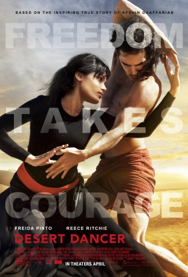
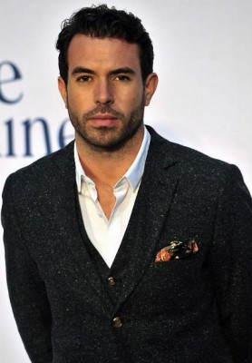
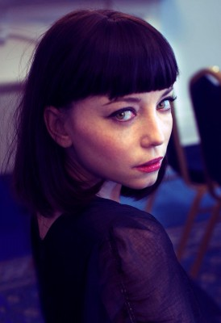
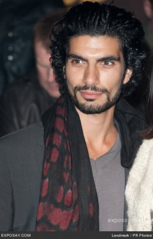

#9002 Wüstentänzer - Afshins verbotener Traum von Freiheit
Alternativ: Desert Dancer
 
 IMDB-Wertung: 6.1 / 10
IMDB-Wertung: 6.1 / 10  Metascore: 0
Metascore: 0 
A film based on an incredible true story. Desert Dancer is a classic hero story about brave young people risking their lives to rebel against their government and fight for their dreams. Set in Iran, where it is currently forbidden to dance, the story follows Afshin Ghaffarian and his friends who despite the dangers form an underground dance company where, via hacking into YouTube, they learn from the very best - Michael Jackson, Pina Bausch, Gene Kelly and Rudolf Nureyev. Reveling in the freedom of expression that dance gives them, they set upon putting on a performance deep in the desert, away from the watchful eyes of the military police.
Jahr: 2014
Dauer: 104 Minuten
FSK:
Land: England Studio: Senator FilmTonspuren: DTS - ,
Untertitel: Deutsch,
Auflösung: 1080p (1920x800) Größe: 5509 MB
Genre: Drama, Biographie
Regisseur: Richard Raymond
Drehbuch: Jon Croker
Soundtrack: Benjamin Wallfisch
Darsteller:
 Nazanin Boniadi als Parisa Ghaffarian
Nazanin Boniadi als Parisa Ghaffarian Freida Pinto als Elaheh
Freida Pinto als Elaheh-  Tom Cullen als Ardavan
-  Marama Corlett als Mona
 Reece Ritchie als Afshin Ghaffarian
Reece Ritchie als Afshin Ghaffarian Simon Kassianides als Sattar
Simon Kassianides als Sattar Neet Mohan als Javadi, Naser
Neet Mohan als Javadi, Naser-  Akin Gazi als Farid Ghaffarian
- Tolga Safer als Stephano
 Makram Khoury als Mehdi
Makram Khoury als Mehdi- Mourad Zaoui als The student
 Alex Klaus als Minder 1
Alex Klaus als Minder 1- Dana Haqjoo als Passport Officer
- Hamza Kadri als Smocking Guy
- Daniel Bass als Bijan
- Sam Kordbacheh als Cyrus
 Gioacchino Jim Cuffaro als (uncredited)
Gioacchino Jim Cuffaro als (uncredited)- Renee Daly als Theatre Audience (uncredited)
 Nigel Genis als (uncredited)
Nigel Genis als (uncredited)- Morris Minelli als The Theatre Technician (uncredited)
 Gino Picciano als (uncredited)
Gino Picciano als (uncredited)- Baz Salam als (uncredited)
 Julie Vollono als (uncredited)
Julie Vollono als (uncredited)- Richard David-Caine als Teymour / Trinculo
- Bamshad Abedi-Amin als Mehran
- Davood Ghadami als Basij Leader
- Chris Geden als Theatre Goer
- Bethan Hanks als Zari
- Gabriel Senior als Young Afshin Ghaffarian
- Omid Gholami als Minder 2
- Joshan Ertan als Young Afshin
- Laura Bernardeschi als (uncredited)
- Hannah Blamires als (uncredited)
- Chris Cowlin als Airport Passenger (uncredited)
- Celine Jedidi als (uncredited)
- Matthew David McCarthy als (uncredited)
- Jon L. Morris als Airport Passenger (uncredited)
- Gina Morrish als Iranian Socialite (uncredited)
- Marios Nicolaides als (uncredited)
- Amanda Smith als (uncredited)
- Neil Alexander Smith als Airport Passenger (uncredited)
Datei: X:\2014(N-Z)\Wüstentänzer - Afshins verbotener Traum von Freiheit (2014, FSK, 1920x800).mkv seit 17.05.2018
Festplatte: HD 2013(I-Z)-2014(A-Z)
 Es gibt insgesamt 163 Filme in der Gruppe '2014(N-Z)'
Es gibt insgesamt 163 Filme in der Gruppe '2014(N-Z)'